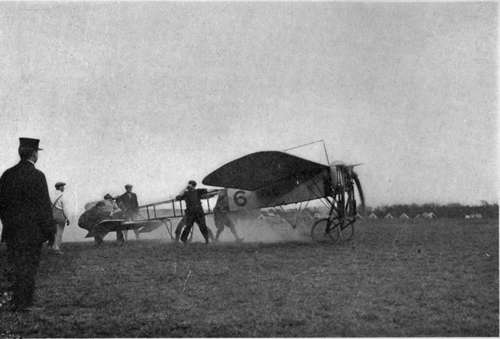

The Law Of The Air. Part 2
Description
This section is from the book "The New Art Of Flying", by Waldemar Kaempffert. Also available from Amazon: The New Art of Flying.
The Law Of The Air. Part 2
It is certain that in order to reduce the possibility of accidents to a minimum only a licensed pilot will be permitted to navigate the air in the future. Judge Baldwin advises that the government issue such licenses only on the filing of a proper indemnity bond for the benefit of those who may suffer such accidents. He has pointed out that the same result could be obtained by compelling the owners of aircraft to take out blanket policies of accident insurance, covering all injuries occasioned by the use of the ship and authorising the injured to bring suit upon it in the name of the insured, but for their own benefit.
In European countries a tendency is shown to subject air navigation to the monopolistic control of the state. In the United States and in England private enterprises will have a freer hand, subject, of course, to strict governmental supervision by registration, license, and inspection. But shall such a government license issued in one state or country be respected in another? There seems to be no good reason why it should not. Automobile licenses are so respected for a limited number of hours. Treaties and agreements will undoubtedly be drawn which will secure the recognition of air licenses by foreign governments. But to harmonise the aeronaut's rights with those of other men and those of foreign lands over which he may take his course, demands not only adequate local legislation but adequate international agreements. Professor Meli of Zurich, in a recent address before the International Vereinigung fur vergleichende Rechtswissenschaft of Berlin, strongly advocated the convening of an international conference for this purpose. Such a conference was held at Paris in 1910, but accomplished very little in the way of practical results. The British Government demanded more time for consideration before approving the measures of the Conference.
Although every reasonable concession will be made to the man who builds and flies aircraft, it must not be supposed that those below are altogether at the mercy of the man in the air. Every moment of an atmospheric voyage is fraught to some extent with danger to those below. If actual physical injury is sustained by a man on the ground, the civil or criminal courts may be appealed to for justice. The man who is wounded by an object dropped from an air-craft certainly has a right of action for damages, whether or not he be the owner of the land upon which he happens to be standing at the time. The master and servant rule would apply here as well as in other cases. An action for damages would lie against the pilot of the flying-machine, whether he be the owner of the craft or not, or the master by whom he is employed. It is even conceivable that an injunction could be obtained to abate a nuisance caused by a fleet of air-craft travelling in a defined roadway day after day and week after week, so as to annoy a tenant or a property holder by their noise, odours, exhaust, and the like.
Besides these rights of the man below, whether he be a landowner or not, there are broader national questions to be considered. In a sense the state is the ultimate owner of the soil, and as such it has the right to regulate the air above its territory, and to state the conditions under which it will permit the navigation of the air. That air-craft will sooner or later become the subject of governmental regulation and authorisation seems almost self-evident when we consider the history of the railroad, the telegraph, the telephone and wireless telegraphy. In the United States the individual states will regulate the air-craft that ply the air wholly within the state; the federal government those vessels that travel from state to state.
The international aspects of the question are somewhat more difficult to dispose of. Before the American Political Science Association, Mr. Arthur K. Kuhn suggested that the right of the craft of one nation freely to traverse the air-space of another might be compared with that of the vessel of one state freely to navigate the river of a coriparian state, especially when the river becomes navigable within its own territory. Dr. Hazeltine, reader in English law at Cambridge, believes, however, that the analogies of the high seas and the maritime belt of coastal waters as applied by advocates of limited sovereignty are far from being sound and applicable. Still it is not unlikely that, in settling the international problems that must inevitably arise in the future, some of the principles of maritime law will be applied to the navigation of the air. Because the airship, and to a lesser degree the aeroplane, may be an instrument of commerce as well as a ship sailing the high seas, Judge Baldwin has suggested that provision must be made for ship's papers; that the number of passengers to be carried on an air vessel must be fixed; that the qualifications of those in charge must be determined; that machinery must be inspected; and that pilotage must be provided for.
Fig. 85. A Blériot racing monoplane. Six men are exerting every muscle to hold back the machine.
Photograph by Edwin Levick.
Freedom of the seas is based on the impossibility of an effective control by any one state. It has been urged by one school of German advocates, among them Meurer, Holtzendorff, and Grünwald, that the air-space over a state is an appurtenance of it, and as such the right to navigate it is not as free as the right to navigate the high seas. By another school the relation of the state to its overlying air-space is compared with that of its coastal waters. The abortive Convention drafted by the International Conference on Aerial Navigation of 1910 was based entirely upon the provisions of international maritime law. There are the same requirements as to registration and nationality of air-vessels, certificates of fitness of the craft and the competence of its navigators and navigation in territorial waters — using the maritime phrase for the sake of convenience — and the same regulations applying to the sojourn of alien craft in distress. It is laid down that aerial navigators must keep a very detailed log, giving the names, nationality and domicile of all persons on board, and embodying a record of the course, altitude and all the events of the voyage. This log must be preserved for at least two years from the date of the last entry, and must be produced on the demand of the authorities. Each state would have to exercise the right of police and customs supervision in the atmosphere over its territory. It would have power to regulate passenger and goods traffic between points in its own territories, and it could prohibit navigation in certain zones of reasonable extent, indicated with sufficient precision to permit of their being shown on aeronautical charts. There is such a thing as a three-mile limit in maritime law, a limit originally set by the range of a cannon. Why then, we are asked, should there not be sovereignty within a certain zone, the height of which is determined by gun fire? The analogy and the rule resulting from it were strongly supported by Westlake before the Institute of International Law; but they were rejected in favour of a negative sovereignty, saving the right of self-protection. The range of Krupp ordnance, which has been especially designed for airship repulsion, would no doubt aid in determining the height of such a zone. Holtzendorff, Fau-chille, and Rolland would restrict absolute sovereignty within a zone of isolation varying from three hundred and thirty metres (the altitude of the Eiffel Tower as the highest artificial object) to fifteen hundred metres. The topography of the earth is in itself a sufficient objection to that proposal. Dr. Hazeltine has expressed the view that any theory of sovereignty limited in height is open to the same objection as the theory of a zone of protection in which free passage is allowed to non-military craft. In his opinion the state should have full, sovereign dominion in the entire air space above its territory. Furthermore, he maintains that the recognition of each territorial state's full right of sovereignty in the air space above it would constitute a basis for the future development of national and international aerial law, leaving, as it would, to aerial navigators as well as states and their inhabitants the full legal enjoyment of their proper interests. A nation's sovereignty can hardly extend to a domain that it cannot defend from invasion. When Balboa stood upon a peak in the Andes and, surveying the Pacific, claimed in the name of Spain all the land that its waters might wash, he was as ridiculous as he was grandiloquent. Even in that age of limited geographical knowledge he must have felt that his country could never uphold the claim by force of arms. To be sure, it would be easier for a nation to defend all the air-space above its territory than to restrain encroachments upon land washed by the waters of a vast ocean. The maximum height at which air-craft can sail may be placed at about five miles, with the probability that the average height will be about one mile. It would not be a task of extraordinary difficulty for any nation equipped with a formidable aerial navy to police its air-space more or less effectively. Whatever zone is adopted, self-interest alone will impel each state to grant access to and passage through its air-space in time of peace, subject only to such rules as its reasonable interests may require. As to the liberty to navigate the air, the following rule was accepted at the International Conference of 1910:
Continue to: